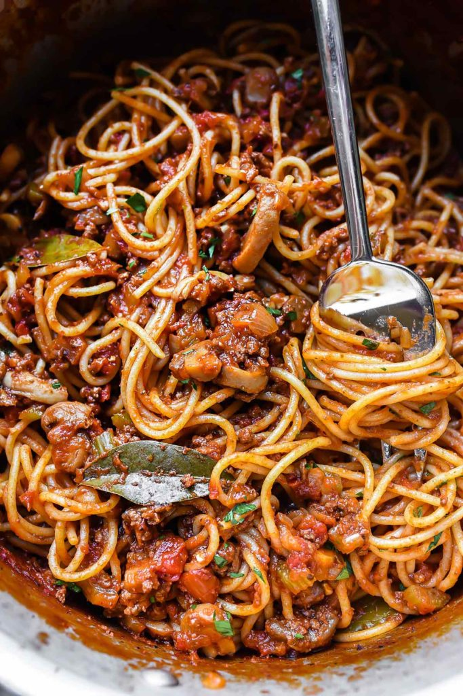

Spaghetti

Mom's Homemade Spaghetti and Meat Sauce
This easy spaghetti and meat sauce recipe takes just a few minutes of prep and then a low simmer on the stove for a deep, meaty-flavored, homemade spaghetti for the best family favorite dinner.
Ingredients
- 1 lb. ground beef
- 4 stalk celery, chopped
- 1 can diced tomates (29oz)
- 1 can tomato paste
- 1 mushroom can red wine
- 5-6 cloves
- 1/4 c. chopped fresh parsley
- 1 t. oregano
- 1 t. salt
- 1 onion, chopped
- 4 cloves garlic, minced
- 1 can tomato sauce (29oz)
- 1 can sliced mushrooms
- 1 can beef broth
- 2 bay leaves
- 1 t. basil
- 2 T. stevia
- fresh ground pepper